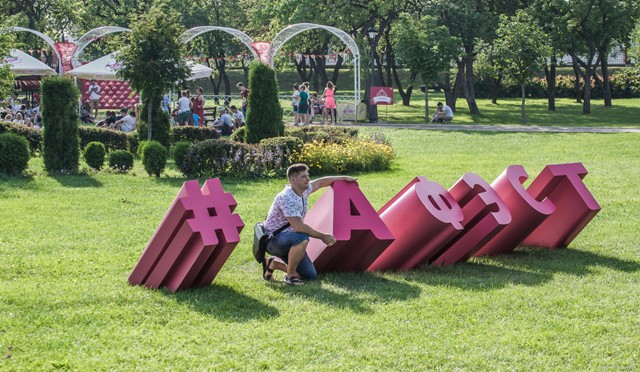
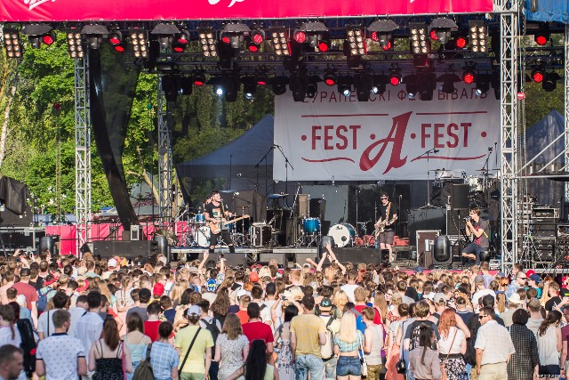

С недавнего времени Лошицкая усадьба стала знаменита не только, благодаря тенистым аллеям, утренним туманам, рыбакам, свадьбам, но и, уже ставшего ежегодным, «А» фэсту от пивзавода «Аливария». Фестиваль от года к году набирает обороты и если на прошлом празднике, как заявляют организаторы, побывало порядка 80 000 человек, то в этот раз ожидали 100 тыс. Что и случилось.
На целый день парк превратился в огромную развлекательную площадку где было место практически для каждого. И даже 35 градусная жара не смогла испортить впечатление.

Действо прекрасно было организовано и продумано. Фудкорты, фотозоны, игровые площадки для детей и много, много всего погружали в праздник и не давали скучать.
Очень интересно было наблюдать трансформацию привычного пространства парка в территорию, не побоюсь этого слова, крупного пивного фэста. И даже тихие и укромные уголки, всю свою историю не знавшие шума и суеты, на целый день оказались в центре событий.

Изюминкой фестиваля стало выступление музыкантов из Германии «Де фазз» и сольный концерт Джона Ньюмана. Но об этом в следующем посте. А пока на сцене «А», вокруг «Аливария», праздник в разгаре.